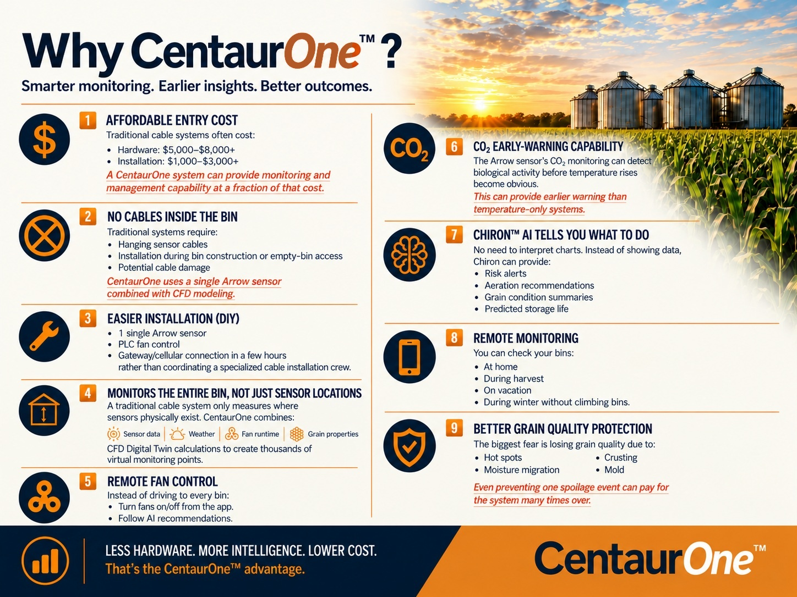
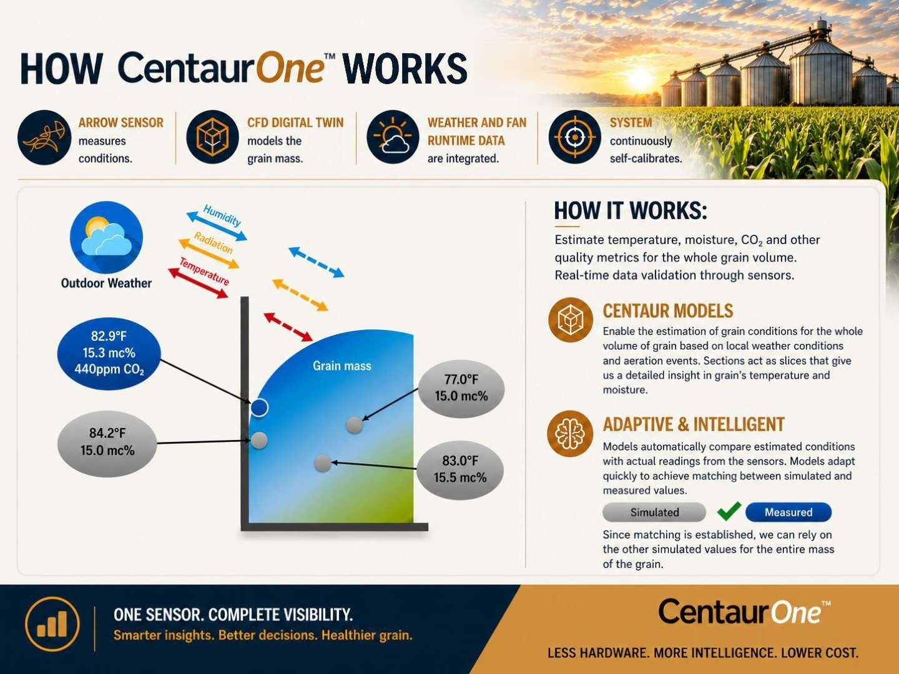
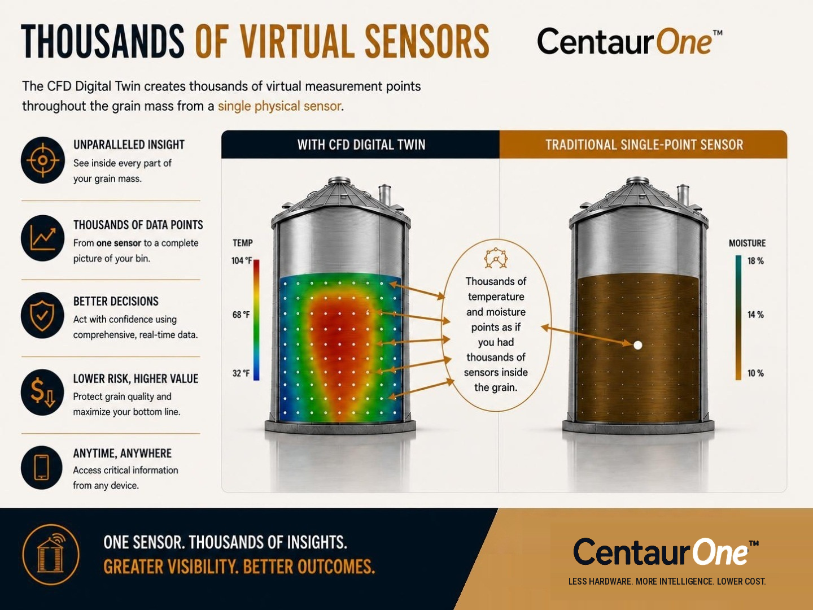
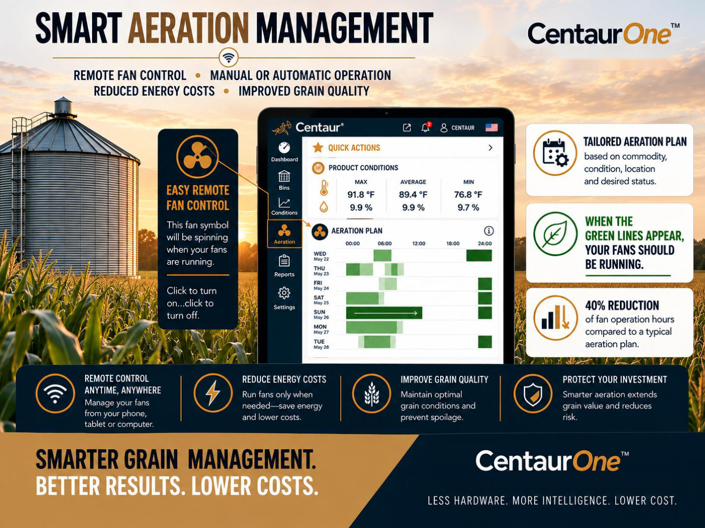
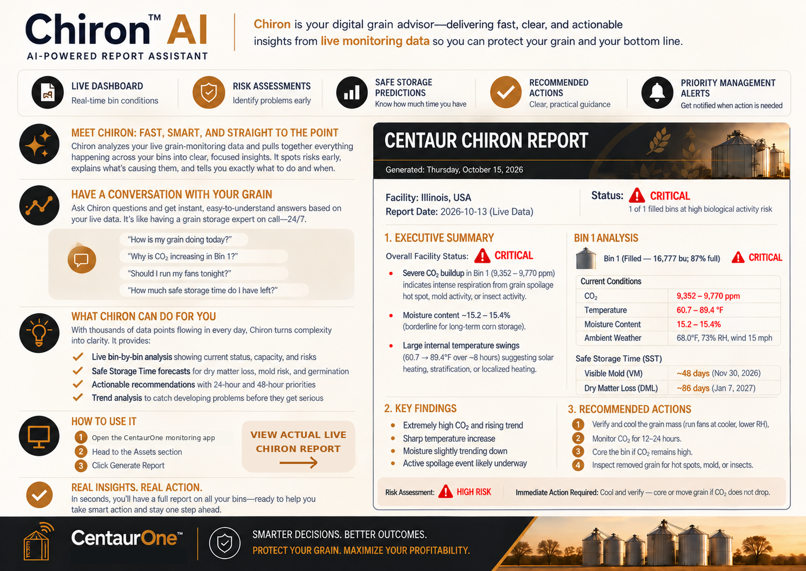
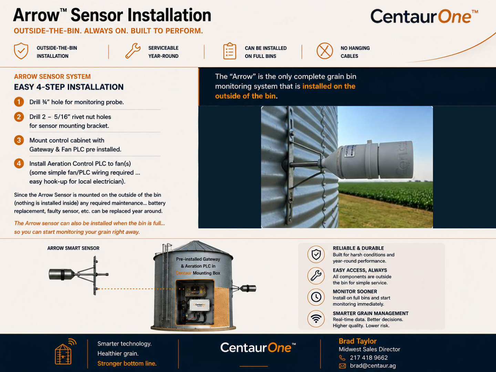
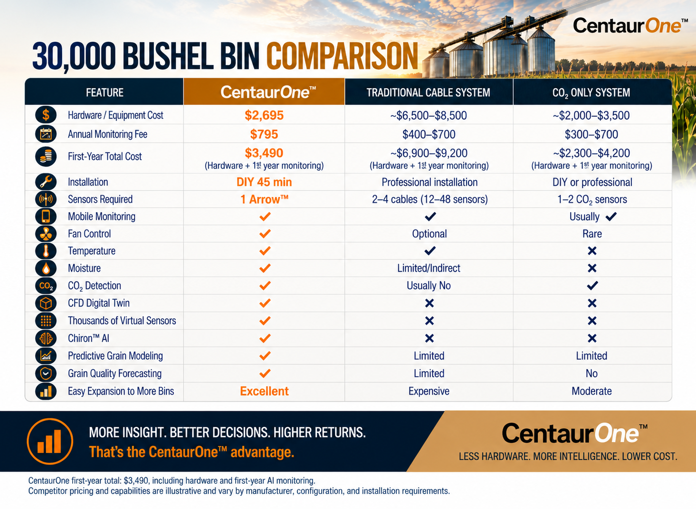
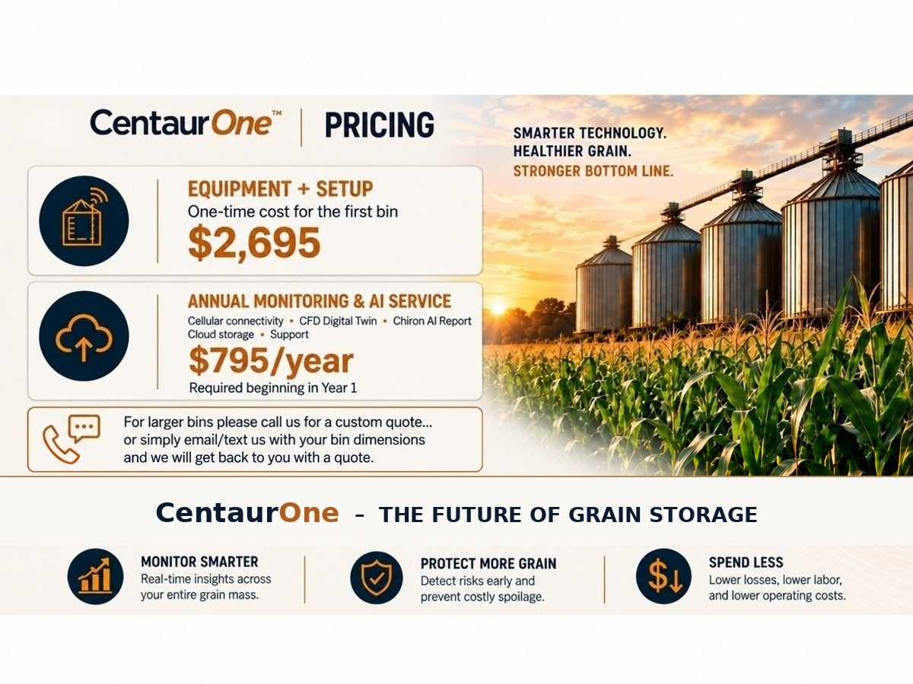

Grain Monitoring Systems for Grain Bins
CentaurOne is primarily designed for farm grain bins up to 50,000 bushels, combining an Arrow sensor with Chiron AI intelligence and remote aeration control. Centaur monitoring technology also supports larger bins and commercial grain storage.





Facility: Illinois, USA
Report date: October 13, 2026
Generated: Thursday, October 15, 2026
Overall facility status: 🚨 CRITICAL — 1 of 1 filled bins at high biological activity risk.
1. Executive Summary
Key findings (with causes):
- Severe CO₂ buildup: 9,352–9,770 ppm in Bin 1, indicating intense respiration that may be caused by a grain spoilage hot spot, mold, or insects.
- Moisture: approximately 15.2–15.4%, borderline for long-term corn storage.
- Large temperature swings: 60.6–89.4°F over approximately eight hours, possibly reflecting solar heating, stratification, or localized heating.
Bin count: 1 total (1 filled, 0 empty).
2. Bin-by-Bin Analysis
Bin 1 — Filled (16,777 bu; 87% full)
Status: CRITICAL
| Measurement | Reported conditions |
|---|---|
| CO₂ | 9,352–9,770 ppm |
| Temperature | 60.6–89.4°F |
| Moisture content | 15.17–15.41% |
| Ambient weather | 68.4°F, 73% RH, wind 15 (unit not supplied) |
CO₂ interpretation: Extremely elevated values may indicate active respiration due to mold, insects, or grain deterioration. The report references a 1,500 ppm critical threshold.
Temperature interpretation: The unusually large swing could reflect localized heating, solar exposure of upper layers, or sensor placement effects. Combined with elevated CO₂, the report flags biological heating risk.
Moisture interpretation: Slightly declining but potentially marginal for stable long-term storage, especially in warmer portions of the bin.
Safe Storage Time (as of October 13, 2026)
| Measure | Forecast |
|---|---|
| Visible Mold (VM) | November 30, 2026 — ~48 days |
| Dry Matter Loss (DML) | January 7, 2027 — ~86 days |
| GRM | Not provided |
Interpretation: Despite these projected timelines, the elevated CO₂ suggests deterioration may already be underway; estimates could be optimistic if a hot spot is forming.
Recent Trends
- CO₂ extremely elevated and apparently rising (9,352 → 9,770 ppm).
- Temperature rose sharply during the day.
- Moisture content declined slightly.
Risk Assessment If Unaddressed
- Visible mold, crusting, caking, and expanding hot spots.
- Quality dockage and possible mycotoxin risk.
- Dry matter loss, shrink, and reduced market value.
- Elevated CO₂ creating potential worker-safety hazards.
Recommended Actions — Today / Within 24 Hours
- Confirm the location: If safe, inspect from outside for odors, condensation, or crusting; use a portable CO₂ meter when available. Do not enter the bin.
- Cool strategically: Aim for grain temperatures at or below 50°F when conditions permit. Run aeration when outside air is cooler, while considering relative humidity and equilibrium moisture.
- Prepare to move grain: If CO₂ stays above 1,500 ppm after 12–24 hours of suitable airflow, consider coring or transferring grain to address potential hot spots.
Within One Week (or Sooner If CO₂ Remains High)
- Core the bin to remove concentrated fines (the report suggests 5–10% from the center, as conditions warrant).
- Inspect removed grain for heat, moisture, caking, discoloration, odors, and insects.
- If insects are detected, consult a qualified professional about treatment. Phosphine data were not available in the report.
3. Priority Actions
Bin 1 — CO₂ 9,352–9,770 ppm: Immediate attention. Initiate controlled cooling, reassess CO₂, and consider coring or transfer if conditions do not improve. Without intervention, spoilage, shrink, and safety hazards may worsen.
4. Technical Insights
Cross-bin patterns: Only one bin was reported. The combination of elevated CO₂, temperature spikes, and marginal moisture suggests possible localized spoilage.
Illinois climate: Fall cooling opportunities may support aeration, but humid conditions require careful fan management to avoid adding moisture.
Best-practice reminders: Cooling slows biological activity; fines can obstruct airflow; and CO₂ can be an early warning before visible deterioration.
Preventative Recommendations
- Target grain temperatures at or below 50°F heading into late fall.
- Review CO₂ and temperature at least weekly, more often during warm spells.
- If storing corn long-term, evaluate moisture targets around 14–15% when practical.
Did You Know?
Even a localized spoilage zone can accelerate dry matter loss and moisture migration, potentially causing crusting and larger mold pockets. Early action may help prevent broader grain-quality losses.
Additional details for refined guidance: grain type, fan horsepower/airflow, and whether the grain surface is peaked or level.
Report generated by CentaurOne monitoring platform · © 2026 Centaur Analytics. This is a dated example, not a live public data connection. Units and bin volume shown here reflect the requested display changes.


